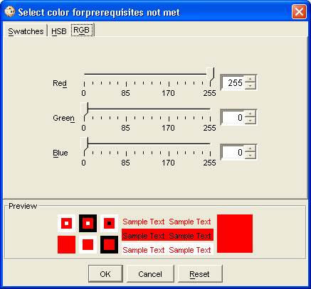

The Colors menu option is for adjusting the colors of Prerequisites Not Met, Automatic Feats and Virtual Feats.
Each option is represented by a button with the current color of the option displayed on the label of the button.
When you click on the button a new dialog box will open that allows you to choose a new color using set swatches, a HSB palette or RGB settings.


